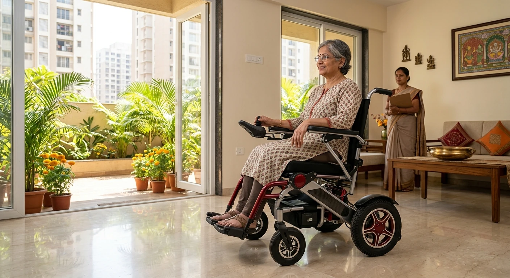

Home Healthcare & Nursing Services
Rehabilitation Multispeciality Medical Care in Bangalore
Get trusted home healthcare, 24/7 nursing, critical care, and specialized neuro & ortho rehabilitation across Bangalore. Our experienced clinical team provides compassionate, doctor-aligned care in the comfort of your home.
Our Healthcare Achievements in Numbers
Care at home
Discuss care options for your family's needs.
Nurse qualifications
Ask about qualifications and registration details for the nurse assigned to your care.
Find us on Google Maps
Emergency Support
Rapid doorstep ICU deployment & on-call triage
Why Families Across Bangalore Choose Ashok Healthcare
Dispatch timing by locality
Contact us for an estimated arrival based on your area, care needs and current staff or equipment availability.
Ex-Apollo Clinical Leadership
Founded and managed by Ashok Doddamani, with a background in nursing and healthcare operations.
Staff screening information
Ask us about role-specific qualifications and screening during the hiring process.
Bridging the Gap Between Hospital Discharge and Home Recovery in Bengaluru
At Ashok Healthcare Services, we believe patient recovery shouldn't stop at hospital discharge. Founded by Ashok Doddamani, whose background includes nursing, healthcare management and emergency services, our organization coordinates care in the patient's home.
Whether your elderly parent requires dignified daily care, a critical condition demands an urgent Home ICU setup, or a stroke survivor needs specialized physical rehabilitation, we create personalized, doctor-approved care plans tailored specifically to your home.
Comprehensive Home Healthcare Services in Bangalore
 Elderly
Care
Elderly
Care
Elderly Care & Assisted Living at Home
Comprehensive support designed to help senior citizens maintain dignity, safety, and independence at home.
 Home
Nursing
Home
Nursing
Professional Home Nursing Care
Skip prolonged hospital stays with registered clinical nurses providing skilled care at home.
 Home
ICU
Home
ICU
Home ICU Setup & Critical Care
Coordinate prescribed equipment and nursing support for eligible patients receiving care at home.
.webp) Neuro
Rehab
Neuro
Rehab
Stroke & Neuro Rehabilitation
Customized home physiotherapy programs designed for long-term functional recovery.
 Ashok
Surgical
Ashok
Surgical
Medical Equipment Rental & Sales (Ashok Surgical)
Medical equipment for home use in Bengaluru. Confirm item availability and delivery timing for your area.
Palliative Care
Palliative Care at Home
Comfort-focused home support coordinated with the patient's treating team and care plan.
Complete Service Overview
Review our core healthcare offerings, clinical scope, and flexible shift options.
| Service Category | Clinical Scope & Key Interventions | Flexible Shift Options |
|---|---|---|
| Professional Home Nursing |
• IV antibiotic administration & surgical wound dressings
• Foley catheterization & Ryle's tube (NG tube) feeding
• Tracheostomy care & post-operative clinical monitoring
|
• 12-Hour (Day/Night)
• 24-Hour Live-In
|
| Emergency Home ICU Setup |
• Portable ventilator installation & blood gas monitoring
• Multipara cardiac monitoring, suction units & infusion pumps
• Nurse bedside support for prescribed critical-care needs
|
• 24/7 Continuous Critical Care
|
| Elderly Care & Assisted Living |
• Personal hygiene, sponge bath & bed-transfer mobility
• Medication administration & vital signs record-keeping
• Fall-prevention mobility & Alzheimer's/Dementia support
|
• 12-Hour Shift
• 24-Hour Attendant
|
| Neuro & Orthopedic Rehab |
• Post-stroke recovery therapy & paralysis rehabilitation
• Post-TKR/THR joint replacement mobility & gait retraining
• Spine stiffness relief & neurological coordination exercises
|
• Scheduled Daily/Weekly Visits
• 45–60 Min In-Home Sessions
|
| Medical Equipment Rental & Sales |
• 5L & 10L oxygen concentrators; delivery timing confirmed by area and availability
• 3 & 5-function motorized electric hospital ICU beds
• Anti-bedsore air mattresses, BiPAP/CPAP units & wheelchairs
|
• Daily, Weekly or Monthly
• Doorstep Setup & Demo
|
Rapid Dispatch & Service Radius in North Bengaluru
Our base is in Yeshwanthpur. Contact us with your address and care needs to confirm current availability and an estimated dispatch time:
Our 4-Step Home Care Onboarding Process
From initial assessment to continuous bedside monitoring across Bangalore.
Initial Assessment
Our clinical lead reviews discharge summaries, doctor prescriptions, and patient requirements.
Custom Care Plan
We design a medical, nursing, and rehabilitation routine aligned with your treating physician's orders.
Caregiver Matching
We discuss care professionals and support options for your patient's stated needs.
Continuous Monitoring & Audits
Senior supervisors conduct routine audits and weekly home visits to maintain clinical standards.
Best Physiotherapy Services for You
Tailored rehabilitation programs delivered by licensed BPT/MPT physiotherapists at your home in Bengaluru — restoring strength, mobility, and pain-free living without clinic travel.

Post-Surgery Joint Rehabilitation
Specialized knee & hip replacement recovery, fracture mobilization, and gait re-training delivered by BPT therapists at home.
Neurological & Stroke Rehabilitation
Evidence-based neuro-facilitation, hemiplegia therapy, balance re-education, and spasticity relief for stroke survivors.
Geriatric Balance & Fall Prevention
Gentle strength restoration, posture alignment, and safe standing routines designed specifically for elderly loved ones.

Spine, Cervical & Knee Pain Relief
Direct bedside electrotherapy (TENS/IFT), manual decompression, and targeted exercise coaching for sciatica and arthritis.

Sports Injury & Kinetic Conditioning
Ligament rehabilitation (ACL/PCL), rotator cuff therapy, muscle tear repair, and active athletic conditioning to full fitness.

Chest & Respiratory Physiotherapy
Airway clearance, diaphragmatic breathing retraining, and lung expansion therapy for COPD, post-COVID, and ICU step-down patients.
Medical Equipment Rental & Sales
Equipment is checked before dispatch. Confirm cleaning, setup, availability and delivery timing for your area.
 Home care equipment
Home care equipmentMedical Equipment Rental & Sales
Ask about hospital beds, oxygen concentrators and other equipment for home use.
 Respiratory care
Respiratory careBiPAP / CPAP Machine
Equipment setup and use should follow the patient's clinical instructions.
 Monitoring
MonitoringPatient Monitor Rental
Ask about monitor options and home setup for prescribed care.

MobilityWheelchair Rental
Review wheelchair types and confirm fit and availability.
 Airway equipment
Airway equipmentSuction Machine Rental
Ask about device availability and a safe-use demonstration.
Find Ashok Healthcare on Google Maps
View the business profile and feedback directly on Google Maps.
View Ashok Healthcare on Google MapsFrequently Asked Questions
Clear, transparent clinical answers regarding home nursing shifts, ICU setup duration, biomedical rental protocols, and 24/7 emergency response across Bengaluru.
A Home Nurse (GNM/B.Sc Nursing) is a licensed medical professional who performs clinical procedures like IV drips, wound dressings, tracheostomy care, and catheterization. A Patient Caregiver (Attendant) provides non-clinical assistance with personal hygiene, bathing, feeding, mobility, and companionship.
Equipment rentals from Ashok Surgical—including oxygen concentrators, hospital beds, and suction units—are sanitized, tested, delivered, and installed at your home with timing confirmed by area and availability across North Bengaluru.
If an assigned nurse is unavailable, contact the coordinator to discuss replacement options. Coverage and timing depend on staff availability and the patient's care requirements; continuous coverage cannot be assumed unless it has been confirmed for your booking.
Qualifications and registrations vary by professional and should be confirmed for the person proposed for your care. Ask about any additional training relevant to your care plan before service begins. Clinical procedures must follow the treating clinician's instructions.
Yes. Our clinical team works strictly under the direction of your treating physician. Nurses maintain daily digital charts tracking vitals, medication delivery, fluid balance, and clinical notes. These reports are updated in real time and can be shared directly with your hospital doctor during follow-up consultations.
Ask the coordinator whether a replacement is available, what qualifications the person has for the patient's tasks, and when coverage could begin. Confirm the arrangement before relying on replacement care, and discuss any uncovered period with the treating team.
Yes. Through Ashok Surgical, we provide flexible rental terms starting from daily and weekly packages up to long-term monthly plans for hospital beds, oxygen concentrators, BiPAP machines, and cardiac monitors. This allows families to evaluate equipment needs before committing to a longer rental term.
Every piece of equipment including ventilators, suction machines, and hospital beds undergoes a 3-tier sanitization and testing protocol at our Yeshwanthpur hub prior to dispatch. Equipment is disinfected with medical-grade sterilizing agents, functionally tested by biomedical technicians, and delivered in sealed protective packaging.
Explore Our Home Care Services in Bangalore
Browse care options, equipment information and practical family guides from Ashok Healthcare.
- Home nursing services in Bangalore
- Home ICU setup and critical care nursing
- Elderly care at home in Bangalore
- Post-operative care at home
- Palliative care at home in Bangalore
- Physiotherapy at home in Bangalore
- Stroke rehabilitation at home in Bangalore
- Orthopaedic rehabilitation in Bangalore
- Browse all home healthcare services
- Medical equipment rental and sales
- BiPAP and CPAP machine rental
- Patient monitor rental
- Wheelchair rental
- Suction machine rental
- Catheter care at home: family safety guide
- Tracheostomy care at home: family guide
- Bedsore prevention at home: family guide
- Oxygen concentrator safety guide for home use
- Planning safe post-stroke home exercises
- Caring for a bedridden patient at home
- Home nurse versus attendant cost factors
- Questions to ask when hiring a home nurse